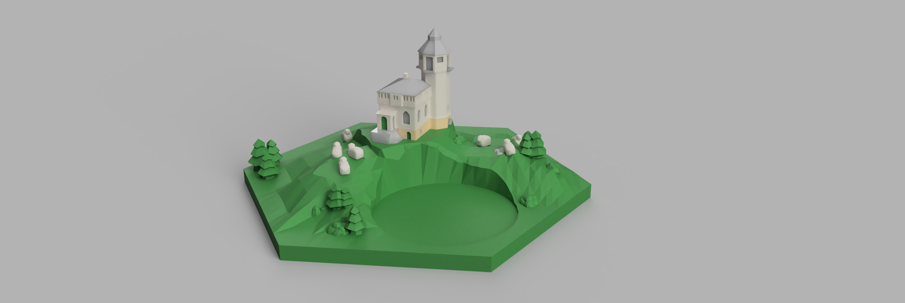
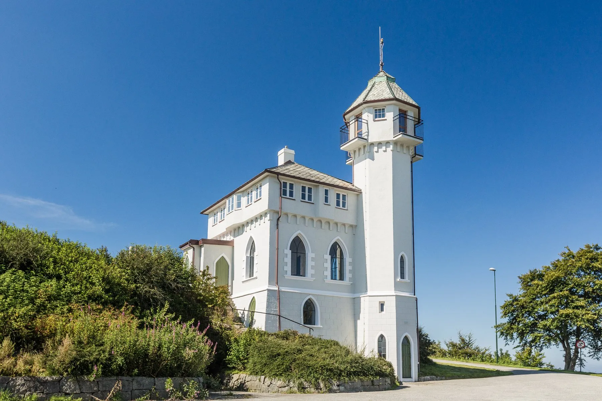
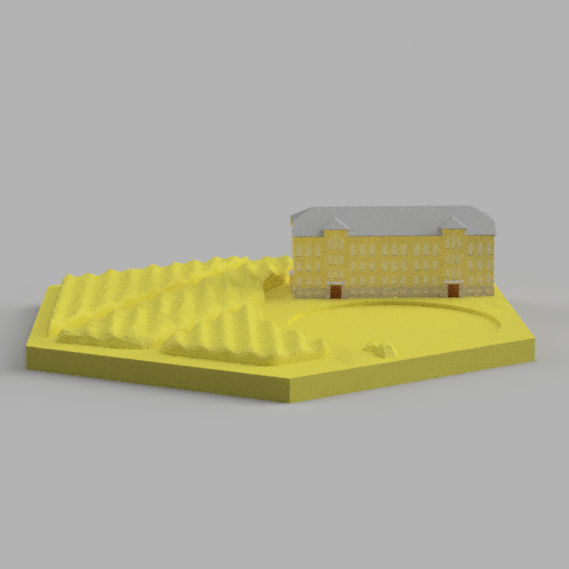
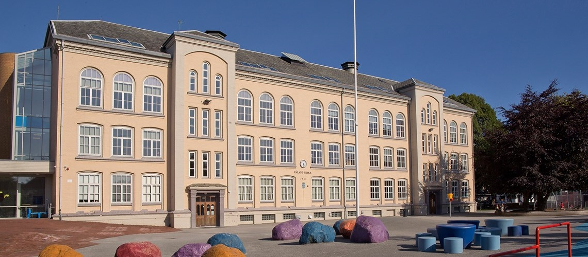
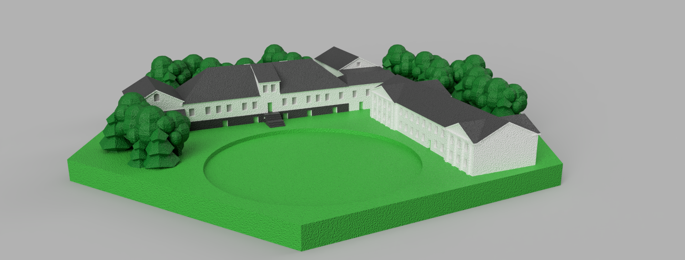
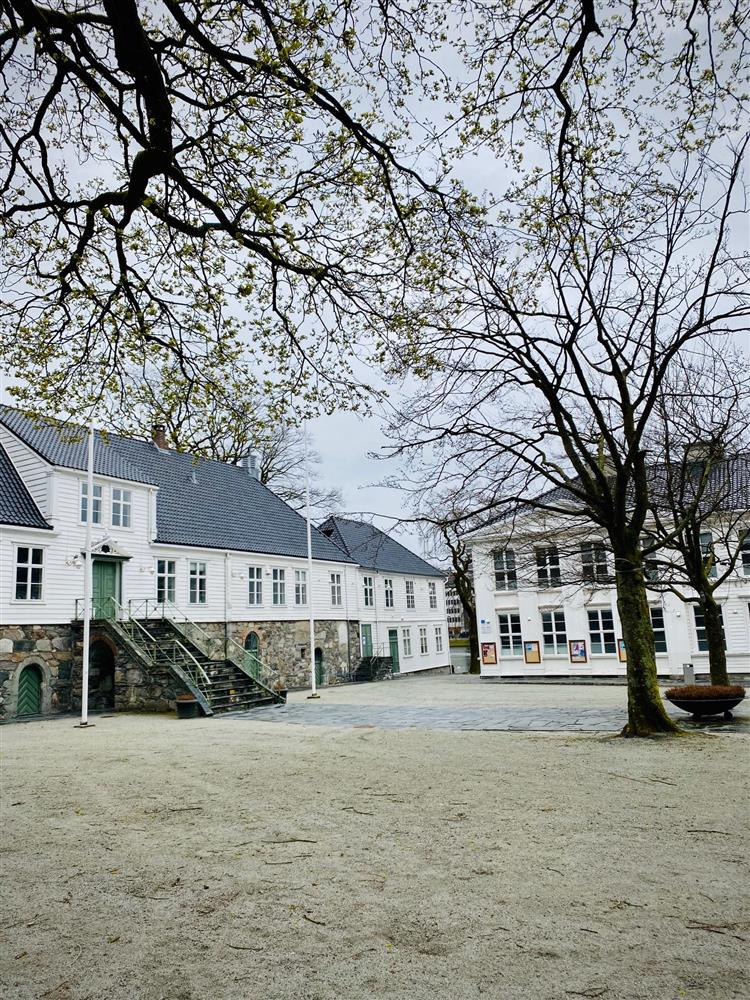
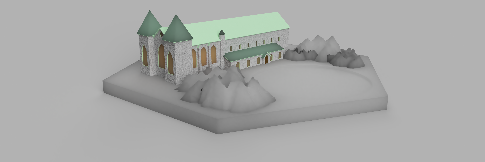
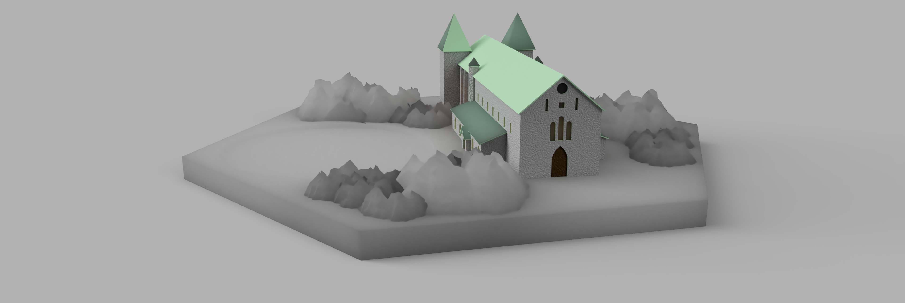
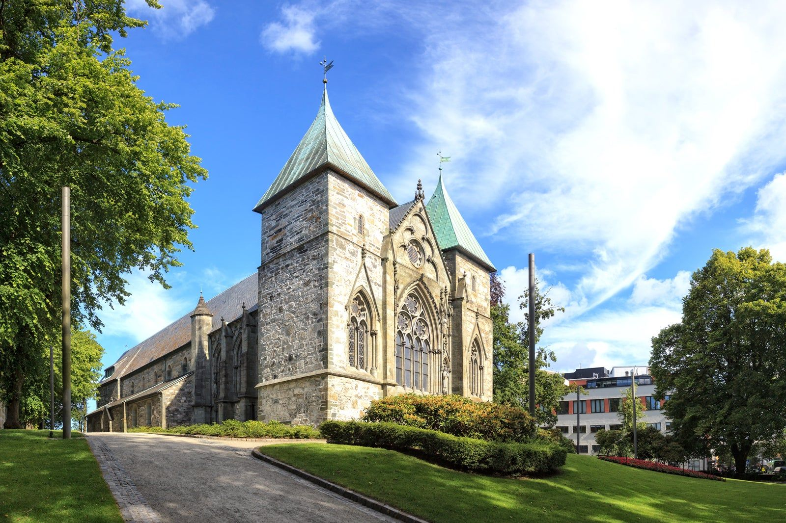

Fusion 360 Design
Inspired by the rich architectural history of Stavanger, I am currently designing a custom 3D-printable Catan board in Autodesk Fusion 360. Each tile is meticulously crafted to replace standard resource hexes with iconic landmarks from my hometown.
The project bridges the gap between digital CAD modeling and physical tabletop gaming, focusing on intricate details like the gothic arches of the Cathedral and the unique silhouettes of local lookout towers.
Tools Used
- • Fusion 360
- • 3D Printing (SLA/FDM)
- • Architectural Photography
The Wool Tiles
Vålandstårnet
Render
Landmark
Valbergstårnet
Render

Landmark

Stavanger's iconic lookout towers serve as the perfect vertical interest for Wool resource tiles.
The Wheat Tiles
Våland Skole Render
Original School
The Våland Skole building features a layout that lends itself well to the sprawling fields of the Wheat resource hexes.
The Wood Tiles
Kongsgaard Render
Katedralskole
Representing the "Wood" resource, the Kongsgaard (Stavanger Cathedral School) model captures the heritage of the city's historic timber and educational foundations.
The Ore Tile: Stavanger Domkirke
Design View A
Design View B
Original Landmark
For the "Ore" or "Stone" tiles, I modeled the Stavanger Cathedral (Domkirke). The focus was on translating the heavy stone masonry and medieval architecture into a hex-friendly geometry.